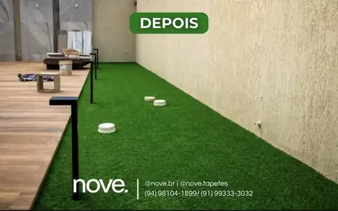

01
Planejamento
Entender o espaço, o uso pretendido e o que a operação precisa para funcionar.

Em projetos residenciais, buscamos conforto e estética. Em ambientes comerciais e corporativos, presença visual, resistência e praticidade.
No esporte, o foco está em desempenho e uso real. A solução é definida de acordo com o ambiente, a rotina e o objetivo de cada projeto.
Atendemos projetos residenciais, corporativos, comerciais e esportivos com soluções pensadas para impacto visual, funcionalidade, segurança e uso contínuo.

O resultado não é só visual. Uma solução precisa funcionar no dia a dia, entregar segurança, facilitar a rotina e continuar fazendo sentido depois da instalação.
Projeto, execução, acabamento e acompanhamento precisam conversar desde o início.
Os registros da NOVE mostram aplicações reais em Marabá, Goianésia do Pará e Jacundá — de áreas residenciais e espaços infantis a ambientes de lazer e projetos personalizados.
Quero transformar meu espaço


Também há registros de transformações com grama sintética em áreas externas, entorno de piscinas e espaços de lazer em Marabá e Jacundá.
Projeto real em Goianésia do Pará. Arraste a divisão para comparar o ambiente antes e depois da instalação da grama sintética.
Mais que instalar gramado. A estrutura precisa ser pensada para receber pessoas, partidas e novas oportunidades de uso.
Entender o espaço, o uso pretendido e o que a operação precisa para funcionar.
Organizar a base e as condições necessárias para a próxima etapa.
Construir a composição que dará suporte à superfície e ao uso do ambiente.
Executar com atenção a alinhamento, acabamento e comportamento da superfície.
Finalizar o espaço pronto para começar a ser usado.
Uma sequência clara para reduzir dúvidas antes da execução e deixar cada decisão ligada ao uso real do espaço.
Uso, contexto e prioridade.
Material, composição e abordagem.
Base pronta para executar bem.
Instalação e acabamento.
Espaço pronto para uso.
Clareza na comunicação de cada etapa do projeto para facilitar decisões e aumentar a confiança no resultado.
Orientação de acordo com a realidade de cada projeto.
Suporte mesmo depois da entrega.
Estética, funcionalidade e investimento inteligente.
Conte o tipo de espaço, o uso, a cidade e uma medida aproximada. O site monta um briefing curto para você enviar diretamente à NOVE pelo WhatsApp.